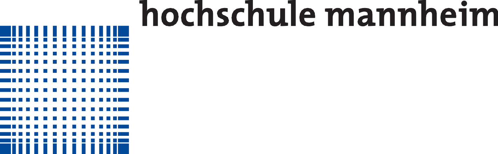

|  | |
| eingereicht von: | Siyapdje Fabrice Dufils |
| Matrikelnummer: 1015366 | |
| Studiengang: Technische Informatik | |
| Hochschule Mannheim | |
| betreut durch: | Prof. Dr. Martin Damm |
| Hochschule Mannheim | |
| Mannheim, den Mar 25, 2016 | |
| Mannheim, den Mar 25, 2016 | |
| Siyapdje Fabrice Dufils |
1 Einleitung
1.1 Gliederung
1.2 Problemstellung und Motivation
- Wer kann Nachrichten ver- bzw. entschlüsseln, und wie? (Authentifizierung)
- Wie werden die Schlüssel zwischen Sender und Empfänger ausgetauscht? (Kanalproblematik)
- Wie wird sicher gestellt, dass die Nachricht den Empfänger so erreicht, wie sie geschickt wurde? (Integritätsprüfung)
1.3 Zielsetzung
Das Ziel dieser Arbeit ist, ein Internet-basiertes sicheres Datenaustausch-System zu entwickeln, das erstens die Komplexität (Schlüsselverwaltung, Schlüsselübermittlung) vollständig auf die Software delegiert. Zweitens muss gewährleisten sein, dass keine zusätzliche Softwareinstallation nötig wird, da die Software über einen Webbrowser läuft. Im Unterschied zu etablierten Lösungen wie Dropbox werden alle Daten vorab lokal verschlüsselt, bevor das Hochladen geschieht.
2 Grundlagen und Stand der Technik
2.1 Begriffe
Schlüsselaustausch
Kritische (sensible) Informationen
Schlüssel
Asymmetrische Kryptographie
Assymetrische Schlüssel (Schlüsselpaar)
Benutzer-Masterkey
Symmetrische Kryptographie
Symmetrische Schlüssel
Dateischlüssel
Passwort und Passphrase
„nur Eingeweihten bekannte, aus Buchstaben, Ziffern oder Sonderzeichen bestehende Zeichenfolge, die den Gebrauch einer Sache, den Zugang zu ihr ermöglicht und sie gegen den Missbrauch durch Außenstehende schützen soll.“
Digitale Signature
Hybride Verschlüsselung
Bei der Schlüsselverteilung hat das symmetrische Verschlüsselungsverfahren den Nachteil, dass sich die Kommunikationspartner vor der Übermittlung der Nachricht auf einen geheimen Schlüssel einigen müssen. Dazu muss ein sicherer Kommunikationskanal benutzt werden, wie zum Beispiel ein Kurier. Asymmetrische Verschlüsselungsverfahren dagegen lösen das Problem sehr elegant, weil zum Verschlüsseln nur der öffentliche Schlüssel gebraucht wird. Zur Übermittlung dieses Schlüssels reicht ein authentifizierter Kanal aus.
Hybride Verschlüsselungsverfahren kombinieren die beiden Verfahren (asymmetrisch und symmetrisch) so, dass deren Vorteile erhalten bleiben:
- Hybride Verschlüsselungsverfahren sind sehr schnell und eignen sich für große Datenmengen, weil die Daten mit dem symmetrischen Verfahren verschlüsselt werden und das asymmetrische Verfahren nur für den Sitzungsschlüssel verwendet wird.
- Es muss vor dem Senden der Nachricht kein geheimer Schlüssel ausgetauscht werden. Die Kenntnis des öffentlichen Schlüssels des Empfängers reicht, um zu verschlüsseln.
Public Key Infrastructur (PKI)
Basis für Public Key Infrastructur sind das asymmetrische Kryptosystem und die hybride Verschlüsselung. Mit Hilfe des asymmetrischen Kryptosystems werden die Daten digital signiert und verschlüsselt.
2.2 Email
Die Identitäten der Kommunikationspartner werden i. Allg. mit den Email-Adressen gleichgesetzt. Eine weitergehende Prüfung findet nicht statt. Dadurch aber wird der Identitätsdiebstahl erleichtert, das heißt die Vortäuschung einer fremden Identität (Email-Adresse). Obwohl in der meisten Email-Clients eine Funktion vorgesehen ist, um das Risiko des Identitätstäuschung zu umgehen, geschieht die Email-Adressenüberprüfung nicht automatisch. Dies bleibt dem Benutzer überlassen.
Ein Austausch über Firmengrenzen hinweg ist problemlos möglich. Problematisch ist aber der Austausch von kritischen Informationen.
Überhaupt stellen sich dieser Lösung etliche Hürden in den Weg:
- Wie gerade erwähnt, setzt diese Lösung voraus, dass sich die Kommunikationspartner mit der Kryptographie bzw. Kryptographiesoftware auskennen.
- Zusätzliche Softwareinstallationen sind zwingend erforderlich.
- Der Schlüsselaustausch ist problematisch, und zwar insofern, als der Dechiffrierschlüssel an den Kommunikationspartner übermittelt werden muss.
- Dazu kommt noch die Infrastrukturproblematik: Schlüsselmanagement, Sicherheit der Schlüssel, Software-Installation etc. ...
2.3 Web-upload
Hier bestehen jedoch folgende Probleme:
- Wie kommen die notwendigen Schlüssel zum Server?
- Ein Eindringling auf dem Server kann die Klartext-Datei und/oder die Schlüssel mitlesen
2.4 File Transfer Protocol (FTP)
Es existieren zahlreiche robuste FTP-Clients von Terminal-Client (mit Linux vorinstalliert) bis GUI-Client ( Filezilla ), welche die auch als Mozilla-Firefox oder Chrome Addons benutzt werden können.
Mit dem Ziel, bessere Sicherheit zu gewährleisten, wurde SFTP (SSH Transfer Protocol) implementiert. SFTP ist eine alternative zum FTP. SFTP benutzt eine sichere Kanal mit Hilfe von SSH für Dateitransfer.
2.5 Cloud-Service
2.6 PGP
Im PGP-System wird für einen Benutzer ein Schlüsselpaar (öffentlicher Schlüssel und privater Schlüssel) erzeugt. Dieses Schlüsselpaar ist mit einer eindeutigen ID verbunden, die normalerweise ein Name oder eine Email-Adresse ist. Die Schlüssel werden in einem Schlüsselbund Datensatz gespeichert.Der Eintrag eines öffentli- chen Schlüssels im Schlüsselbund besteht aus einer ID, dem öffentlichen Schlüssel selbst und einem Zeitstempel, der auf das Erstellungsdatum des Schlüsselpaars referenziert. Öffentliche Schlüssel werden auf einem öffentlichen Schlüsselring gespeichert, wohingegen private Schlüssel auf einem privaten Schlüsselring gespeichert werden. Jeder Benutzer muss einen öffentlichen und privaten Schlüsselring speichern und verwalten[AR95][JF96]. Wenn Benutzer A eine gute Kopie des öffentlichen Schlüssels von Benutzer B besitzt, z.B. eine Kopie, deren er von der Integrität und Authentizität (keine Verfälschung etc.) überzeugt ist, dann kann A diese Kopie unterschreiben und an Benutzer C weitergeben. A wirkt somit als eine Mittelsperson von B zu C. Der von A signierte Schlüssel wird als Schlüssel Zertifikat bezeichnet. Jeder Benutzer muss im PGP-System erklären, welchen Personen er oder sie als Mittelsperson vertraut und muss den öffentlichen Schlüssel der Mittelsperson mit seinem eigenen privaten Schlüssel signieren. Außerdem muss der Benutzer die verschiedenen Vertrauensgrade angeben, welche er zu seinen Mittelsperson hat. Eine Vertrauensbeziehung zu einer Person kann in Graden als unbekannt, nicht vertrauenswürdig, geringfügig vertrauenswürdig oder vollständig eingestuft, also klassifiziert werden. Jeder Benutzer speichert seine vertrauten Informationen oder Zertifikaten auf seinem in seinem PGP Konto. Abhängig vom Vertrauensgrad zu einer Mittelsperson ist dem entsprechenden Zertifikat im Schlüsselbund einen Gültigkeitsgrad zugewiesen. Er kann den Schlüssel in diesem Zertifikat nur dann verwenden, wenn der Gültigkeitsgrad hoch genug ist. Zum Beispiel kann ein skeptischer Anwender zwei vollständige Unterschriften für einen öffentlichen Schlüssel einfordern, um ihn als gültig anzusehen, wohingegen ein wenig skeptischer Benutzer, nur eine vollständig vertrauenswürdige Signatur oder zwei geringfügig vertrauenswürdige Signaturen verlangen könnte. Es ist wichtig zu beachten, dass Schlüsselringe und Vertrauensgrade es ermöglichen, jedem Benutzer seine eigene Vertrauenspolitik zu gestalten. Diese enge Vorstellung von Politik ist in PGP angebracht, denn es wurde speziell entworfen, um sichere E-Mails für den Einzelnen bereitzustellen. Die Unterschrift von A auf öffentlichen Schlüssel von B nicht so interpretiert werden sollte, dass A der persönliche Integrität von B vertraut. Die richtige Interpretation ist eher, dass A glaubt, dass die Bindung der Identität von B zum Schlüssel richtig ist. Darüber hinaus ist es wichtig zu beachten, dass das Vertrauen nicht transitiv ist. Die Tatsache, dass A dem B vollständig als Mittelsperson vertraut und dass B vollständig C vertraut, bedeutet nicht automatisch, dass A mit dem gleichen Grad C vertraut. Da PGP in der Popularität gewachsen ist, ist ein dezentrales "Web of Trust“ entstanden. Jedes Individuum ist verantwortlich für den Erwerb der öffentlichen Schlüssel, die er braucht, und für die Zuordnung des Vertrauensgrads zu den Mittelpersonen, von denen er sie bekommt. Ähnlich muss jedes Individuum sein eigenes Schlüssel- paar erstellen und seinen öffentlichen Schlüssel verbreiten. Sein Ansatz lehnt folglich die Benutzung der offiziellen Zertifizierungsstellen ab, welche die öffentlichen Schlüssel eines Individuums unterschreiben. Damit handelt eine einzelne Person als "Vertrauensserver"für die Benutzer von diesen Schlüsseln. Ein Vorteil von PGP ist, dass jeder Benutzer denjenigen vertrauen (öffentlichen Schlüssel signieren) kann, denen er will. Außerdem bietet PGP die Möglichkeit, Gruppen zu erzeugen und in dieser Gruppe verschlüsselte Nachricht oder Dateien zwischen den Mitgliedern auszutauschen. Der erste Nachteil von PGP ist, dass die Software auf dem lokalen Rechner installiert werden muss und dort alle Schlüssel gespeichert werden. Wie soll der Benutzer dann seinen Schlüssel in einem anderen System oder in einer anderen IT-Infrastruktur benutzen. Die Schlüssel können zwar exportiert und importiert werden, jedoch führt dies zu einem erhöhten Aufwand. Ferner stellt sich die Frage, wie der Benutzer es einem Vertrauten ermöglicht, seine Schlüssel zu verwenden? Außerdem stößt die lokale Installation der Software auf bestimmte Anforderungen.
2.7 X.509
Aber ihr Hauptziel ist einfach die Bindung zwischen Benutzern zu ihren Schlüsseln zu schaffen. Jedoch unterscheidet sich X.509 scharf von PGP im Grad der Zentralisierung der Informationen. In PGP kann jeder öffentliche Schlüssel signieren und damit als Mittelsperson handeln. Der X.509 Framework fordert dagegen, dass jeder Benutzer seine Zertifikate von einer offiziellen Zertifizierungsstelle (CA) erhalten muss. Wenn Benutzer A ein Schlüsselpaar (öffentlicher Schlüssel , privater Schlüssel) erstellt, muss er es und die Rest der erforderlichen Informationen von einem oder mehreren CAS zertifizieren lassen und die erhaltenen Zertifikate in einem offiziellen Verzeichnisdienst registrieren. Wenn A später mit B sicher kommunizieren will, erhält er ein Zertifikat von B aus dem Verzeichnis-Server. Wenn A und B von der gleichen CA zertifiziert wurden, kann nur der Verzeichnisserver B’s Zertifikat zu A senden. A kann dann die Gültigkeit dieser Zertifikat mit dem öffentlichen Schlüssel dieser gemeinsamen CA prüfen kann. Wenn A und B nicht unmittelbar durch eine gemeinsame CA zertifiziert werden, dann die Verzeichnisdienst müssen einen Zertifizierung-Pfad von A nach B erstellen. Um diesen Pfad zu verwenden, muss A den öffentlichen Schlüssel von der erste Zertifizierungsstelle in dem Pfad kennen. Somit beruht X.509 Framework auf der Annahme, dass CAs zu einem globalen Zertifizierungsstellen Baum-organisiert sind und dass alle Benutzer, die von CAs mit einem gemeinsamen Vorfahren in diesem globalen Baum unterzeichnet wurden[DWC03] [HPFS02] [CD03].
Das Problem ist, dass der Benutzer nicht eine autonome Identität einer weiteren Person prüfen kann, denn er ist vom öffentlichen Schlüssel seiner CA abhängig. Außerdem vertraut er automatisch alle Personen, denen die Öffentlichen Schlüssel durch die selbe Zertifizierungsstelle signiert wurden oder durch einer anderen vertrauten Zertifizierungsstelle. Dies stößt gegen einige Anforderungen, die fordern, dass die Benutzer nur gewünschte Personen vertrauen müssen. Darüber hinaus hat die NSA Affären bewiesen, dass Zertifizierungsstelle verfälschte Zertifikate erstellen können und somit werden verfälschte Identitäten freigegeben.
2.8 SPKI / SDSI
Der Besitzer einer Datei will zum Beispiel den Zugriff auf die Dateien an viel Benutzer freigeben, dafür muss er jeweils ein Zertifikat mit den gewünschten Berechtigungen unterschreiben.
3 Anforderungen
3.1 funktionale Anforderungen

Administrator role
- Der Administrator muss in der Lage sein, neue Benutzer im System hinzu zu fügen und zu entfernen.
- Der Administrator darf nicht in der Lage sein, Benutzer kritische Informationen zu modifizieren oder zu lesen.
Benutzer role
- Der Benutzer kann eine Vertrauensbeziehung zu anderen Benutzern herstellen und sie wieder zurückziehen.
- Der Benutzer kann eine Gruppe bilden und wieder auflösen.
- Der Benutzer kann einer Gruppe vertraute Benutzer (Friends) hinzufügen.
- Der Benutzer kann den Zugriff auf seine Dateischlüssel an alle Mitglieder einer Gruppe freigeben und diese Freigabe auch wieder zurückziehen.
Registrierung und login
- Bei der Registrierung bzw. beim Login Phase dürfen kein Password oder keine Passphrase sowie Daten, die in irgendeiner Art mit dem Password bzw. mit der Passphrase korrespondieren, ins Netz gehen.
Server-Client Kommunikation
3.2 Nicht-funktionale Anforderungen
3.2.1 Allgemeine nichtfunktionale Anforderungen
- Kein Einsatz von HTTPS
- RemoteServer darf keine Chiffrierung/Dechiffrierung durchführen
- LocalServer soll von ein USB-Stick getart werden, und soll auch von dort aus im hintergrund laufen.
- Benutzerinteraktion erfolgt durch ein Browser sodass keine zusätzliche Software erforderlich ist.
3.2.2 Wartbarkeit und Änderbarkeit
3.2.3 Portierbarkeit und Plattformunabhängigkeit
3.2.4 Daten-und Serverintegrität
4 Konzept
4.1 Allgemein Architektur

4.2 Authentifizierung
Beim Einsatz von SRP-Secure Remote Password Protocol lasst sich auch einfach der gegenseitige Aunthenfizierung von [LokalServer] und [Remote- Server] realisieren, diese geschehet auch beim Authentifizierungsphase.
SRP Protokoll ist ein Authentifizierung protokoll, dabei können manche per-Sitzung zufällige generierte Werte als Sitzungschlüssel verwendet werden (B). Das bestehende Problem beim Einsatzt von dauerhafte Passwort wird durch SRP minimisiert, indem keine Passwort-korrespondierte ( Hash, verschlüsselte Passwort .... ) gepeichert wird, sondern ein „Verifier“. Gewinn ein Eingreiffer die auf den Datenbank gepeichert „Verifier“ , dann kann der nicht daraus die Benutzerpasswort wiederrechnen. Ein gestohlener Verifier ist ebenso nicht ausreichend zür Anmeldung, Weil das Passwort immer noch benötigt wird.
Zur erfolgreiche Authentifizierung wird kein sensible Information ausgetausch „Sniffing-Attack“ ist dann dabei hilflos.

4.3 Kritische Daten Integrität
4.4 Schlüsselaustausch
4.5 Server Integrität
RemoteServerintegritätsprüfung gescheht beim der Allererste Loginversuch, sowie beim jeder weiteren Request von LocalServer zu RemoteServer.
Dank SRP6-A Protokoll können LocalServer und RemoteServe sich gegenseitig authentifizieren, und zwar an Dritte Vorgang von der Protokoll.
Beim erfolgreichen Loginversuch wird ein Header SERVER_PUBLIC_KEY , die korrespondierte geheime Schlüssel muss nicht zwanläufig geheim sein. An der LocalServer wird auch ein Schlüsselpaare erzeugt und der Header CLIENT_PUBLIC_KEY wird gesetzt. Diese weitere Massnahme verstärkt die Vertrauenbeziehung die beim erste gegenseitige Authentifizierung von LocalServer und RemoteServer etabliert wurde. LocalServer kann in weitere Request von LocalServer dann immer prüfen anhand von mit LocalServer private Schlüssel signierte Payload, die PayLoad authentifizieren ( MAC ), und dadurch auch sicherstellen dass der Request tatsächlich von LocalServer kommt.
4.6 Web-Of-Trust ( Friends-Konzept )
- Benutzer Credentials
- Public Key
- Hashwert von Public Key
- Public Key Signature
- Private Key (verschlüsselt mit Secret-Key)
- Hashwert von Private Key

Benutzer als Friend hinzufügen
Hat Alice Bob als „Friend“ hinzugefügt, so können weitere Freunde von Alice Bob als Friend annehmen. Dadurch bildet sich eine Kette von Friends [WEB-OF-TRUST]. Weitere ist die Freundschaftbeziehung zwischen Benutzer ein Randbedingung damit A beispielerweise B in eine Gruppe hinzufügen kannst, und mit B dann auch Dokument durch von A gegründete Gruppe austauschen kannst.
Bei der Aufbau eine Vertrauenbeziehung ( Friend ) zwischen A und B , wird der öffentliche Sclüssel B von A signiert. diese Signature bildet materialisch den Vertrauenbeziehung zwischen A und B. Diese Signature spielt nicht nur eine Rolle um der Vertrauenbeziehung zwischen zwei Benutzer zu materialisieren, sondern auch beim Überprüfung von RemoteServer Integrität.
Log sich ein Benutzer ein und merkt dass seine Signature nicht mehr stimmt, dann wurde der RemoteServer kompromitiert.
Vertrauenbeziehung zurückziehen
4.7 Übermittlung von Passphrase
Wie in Abschnitt 4.5↑ gesehen, wird beim Start der LocalServer ein Schlüsselpaare erzeugt, der CLIENT_PUBLIC_KEY wird dann als Header gesetzt, und der geheime Schlüssel bleibt an LocalServer. diese öffentliche frisch generierte Schlüssel ist nicht mit der Benutzerschlüssel zu verwechselt. Die öffentliche Schlüssel der als Header gesetzt wurde und von daher systemweit zugreifbar ist kann an der Handy geschickt wird, und von dort aus wird von der Benutzer eingegeben Passphrase mit der CLIENT_PUBLIC_KEY verschlüsselt. die mit der öffentliche Schlüssel verschlüsselte Passphrase gehe dann von Handy zur LocalServer über RemoteServer.
4.8 Gruppe
Zu eine Gruppe gehört eine Schlüsselkey ( Symmetrische Schlüssel ) , abgekürzt GK, da diese Schlüssel eine kritische Information ist, taucht der nicht unverschlüsselt in RemoteServer. Beim Erstellen einer Gruppe beim einem Benutzer wird der KG mit der öffentlichen Schlüssel der Benutzer verschlüsselt, zu einer Gruppe gehört genau einer KG.
Der Gruppeverantwortlich kann jederzeit der Gruppe löschen, und zwar ganz unabhängig von der Art der Gruppe.
4.9 Dokumentaustausch
von private Gruppe zu öffentliche Gruppe

zwischen zwei öffentliche Gruppe

- Dokument D in Gruppe A
- Prüfen ob Benutzer U GV in Gruppe A
- Prüfen ob GV , Gruppemitglieder in Gruppe B
- authorizieren das Teil von Dokument D zwischen Gruppe A und B
Zwischen zwei Benutzer
Wie auf der unterstehende Abbildung 4.7↓ zu sehen ist, der Benutzer der den Vorgang auslöst wird dann als Gruppeverantwortlich der zu erzeugende Gruppe markiert, in der Fall Benutzer Alice. Alice kann jeder Zeit die Gruppe wieder löschen oder Bob von der Gruppe entfernen.


4.10 REST (Representational State Transfer)
Beim Einsatz von REST wird kein Query String benutzt, was als Vorteil hat, eine mögliche Sicherheitlücke zu vermeiden. Eine weitere Vorteil ist die Überschaubarkeit der Software.

4.11 Integrität der transportierte kritischen Daten ( JWS )
Als Lösungsatzt wird eine End-to-End Integritätsprüfung eingesetzt mithilfe der JWS ( JSON Web Signature ) spezifiziert in RFC 7515[8]
JWS basiert auf JSON Web Encryption (JWE)[7] um kryptographische Operationen durchzuführen. JWE implementiert die meistens bekannte standard kryptographie Algorithmus, wie RSA, AES ....
JWS benutzt die von JWE implementiert RSA um Daten zu signiert. Bei Einsatzt von JWS muss Acht darauf gegeben dass die JSON-Daten richtig formatiert wurde.

4.12 JSON Web Token (JWT)

Token werden an Stelle von Benutzername-Passwort-Kombinationen verwendet, um auf Ressourcen zuzugreifen. Ein Token ist meist eine Zeichenkette aus Buchstaben und Zahlen; Sonderzeichen können auch verwendet werden. Um es vor Missbrauch zu schützen soll es schwer zu erraten und passend zu einer Sicherheitsabfrage sein. OAuth unterscheidet zwischen Abfrage-Token und Zugangs-Token.
4.13 Szenarien
Benutzer registrieren

Benutzer einlogen

Freund hinzufuegen

-
Beispielszenario: Alice will Bob als Freund markieren
Alice forder die Benutzerlisteseite auf, clicke auf den „+“ ( Plus )-zeichen, um Bob als Freund hinzuzufügen. - Alice ist gefordert, Ihre Passphrase einzugeben (Falls Passphrase noch nicht vorhanden ist)
- Der LocalServer lädt Bobs öffentlichen Schlüssel von RemoteServer herunter.
- LocalServer lädt Alice private Schlüssel vom RemoteServer herunter (Falls noch nicht vorhanden) und entschlüsselt der letze mit Alice Passphrase
- Bobs öffentlichen Schlüssel wird mit Alices privaten Schlüssel signiert.
- Aus Signature, Alices und Bobs Id wird ein „Friend“ Objekt erzeugt. Dies entspricht die Vertrauenbeziehung zwischen Alice und Bob. Diese Objekt wird an RemoteServer geschickt und dort gespeichert.
Freund revoke

- Alice fordert die Freundelisteseite auf, clicke auf den „-“ ( Minus )-zeichen, um Bob als Freund hinzuzufügen.
- Alice ist dann gefordert, die Aktion zu bestätigen
- Bestätigt Alice die Aktion, dann wird die revoke-Request über LocalServer zu RemoteServer weitergeleitet
- Auf der RemoteServer wird die Eintrag was die Freundschaft zwischen Alice und Bob gelöscht
- Alice wird über die erfolgreiche Zerstörung einer Vertrauenbeziehung mit Bob informiert.
Datei hochladen

- Alice will eine Datei hochladen
- Alice wählt sich eine Gruppe aus wo sie mitglied ist
- Alice clickt auf Datei Upload und wählt sich Datei aus, die sie gerne in die vorherige ausgewählte Gruppe hinzüfügen will
- Alice Clickt auf dem Button „upload“ ( hochladen )
- Die Anfrage wird an LocalServer weitergeleitet
- Alice Passphrase wird gefördert falls noch nicht im LocalServer vorhanden ist
- Alices Schlüsselpaare wird von RemoteServer runtergeladen sowie von Alice ausgewählte Gruppe Secret Key (SGK)
- Alice Kopie von SGK wird mit Alice private Schlüssel dechiffriert
- mit der dechiffriert SGK wird die Datei verschlüsselt. Dechiffriert SGK wird bald als die Verschlüsselung von Datei erfolgt hat von LocalServer zerstört.
- Schliesslich wird die chiffriert Datei zu RemoteServer übermittelt und ein Eintrag von Typ Dokuments auf der Datenbank gespeichert.
Datei runterladen

- Alice befindet sich in einer Gruppe und will ein Datei runterladen. Also Alice muss mitglied von der Gruppe sein
- Alice click auf „download“ (herunterladen), Die Anfrage wird dann an LocalServer weitergeleitet
- Alice Passphrase wird gefördert falls noch nicht im LocalServer vorhanden ist
- Alices Schlüsselpaare wird von RemoteServer runtergeladen sowie von Alice ausgewählte Gruppe Secret Key (SGK)
- Alice Kopie von SGK wird mit Alice private Schlüssel dechiffriert
- LocalServer lädt von RemoteServer der geförderte Datei runter.
- Datei wird mit dechiffrierte SGK entschlüsselt.
Neue Gruppe erzeugen

- Alice klickt auf eine neue Gruppe an und gibt den Name der neuen Gruppe im ersheinte Pop-up
- LocalServer lädt Alice öffentliche und private Schlüssel runter.
- Alice wird gefordert, Ihre Passphrase einzugeben (Falls noch nicht vorhanden)
- Es wird eine symmetrische Schlüssel (SGK)
- SGK wird mit Alice öffentliche Schlüssel verschlüsselt.
- SGK wird mit Alice private Schlüssel signiert.
- Nach die vorherige Vorgang, werden ein Gruppe Objekt und SymKey Object erzeugt. Die beide Objekte werden von LokalServer zu RemoteServer geschickt.
5 Implementierung und Evalierung
- LocalServer
- RemoteServer
- CryptUtils
- Frontend
- Inbetriebnahme-programm
5.1 Überblick auf die Technologie
| Programmiersprache | Technologie/Framework | Buildtools | |
| CryptUtils | JAVA | JCE, Guava | Maven |
| RemoteServer | JAVA | Spring, Hibernate, Guava | Maven |
| LocalServer | JAVA | Spring, Guava | Maven |
| Frontend | JavaScript/HTML/CSS | AngularJS | GruntJS |
5.2 Allgemein Designentscheidungen
5.2.1 JSON-Format
5.2.2 UTF-8 und Base64
5.2.3 HTTP Headers
| Headername | Wert | gesetzt bei | Laufzeit | |
| Content-Security-Policy | script-src ’self’ | LocalServer | Erste Request an LocalServer | 1 |
| Authorization | SRP | LocalServer | Erste Login Request | 2 |
| WWW-Authenticate | SRP | LocalServer | Erste Login Request | 3 |
| realm | realm | LocalServer | Erste Login Request | 4 |
| hash-algorithm | SHA256 | LocalServer | Erste Login Request | 5 |
| X-XSRF-TOKEN | ==== | LocalServer | Erste Request an LocalServer | 6 |
| AUTH-TOKEN | ==== | RemoteServer | Nach erfolgreichen Authentifizierung | 7 |
| EXPIRES-IN | ==== | RemoteServer | Nach erfolgreichen Authentifizierung | 8 |
| Client-Public-Key | ==== | LocalServer | Erste Login Request | 9 |
| Server-Public-Key | ==== | RemoteServer | Erste Login Request | 10 |
| typ | JWT | RemoteServer | Nach erfolgreichen Login | 11 |
| alg | RS512 | RemoteServer | Nach erfolgreichen Login | 12 |
- (1) Content-Security-Policy spiel eine bedeutende Rolle um XSS-Attack zu vermeiden. mit dem Wert script-src ’self’ weist die Header hin, dass alle JavaScript source Datei nur von Server geladen werden dürfen. In unsere Fall vom LocalServer.
- (2) (3) (4) und (5) Informieren den Webbrowser über dem Authentication Algorithmus bzw. dem Hash-Algorithmus, der eingesetzt wird.
- (6)Wichtige Header gegen XSRF-Attacke (Cross Site Request Forgery) [A] [A] XSRF : Manipulation von Parametern, so dass im Browser Skriptcode ausgeführt wird; häufig auch synonym zu HTML-Injection verwendet[4]
5.3 Frontend
AngularJS und Security
5.3.1 Ausstatung von Routes
5.4 allgemeine Implementierung Entscheidung von Local-und Remoteserver
5.5 LocalServer
Auch wenn LocalServer mit einem Plattform unabhängige Programmiersprache implementiert wurde, musste nochmal dass Programm rücksichtvoll konfiguriert werden, damit beispielerweise Der LocalServer nicht auf ein Port zuweisen den schon für ein andere Zweck auf der Benutzerrechner belegt wurde.
Konfigurationsdatei
name: CryptLocal
description: CryptoLocal Server
server:
port: 0
multipart:
maxFileSize: 128KB
maxRequestSize: 128KB
remote:
url: http://localhost:8080
users: /api/users
document: /api/documents
groups: /api/groups
friends: /api/friends
login:
challenge: /session/login/challenge
$ java -jar -Dspring.profiles.active=production CryptoRemote-0.0.1-SNAPSHOT.jar
Model View Controller

Fehlerbehandlung und Benutzerrückmeldung
- Falsche Request
- momentane nicht ansprechbare Resource
- Fehler im Code
Anhand dieser Arbeit wurde folgende Http-Status code benutzt :
| Status-code | Kurzbeschreibung | Beschreibung | |
| 1 | 200 | OK | |
| 2 | 201 | CREATED | |
| 3 | 202 | DELETED | |
| 4 | 204 | No Content | |
| 5 | 401 | Error Authentication | |
| 6 | 403 | Forbidden | |
| 7 | 405 | Not allow | |
| 8 | 400 | ERROR |
Sollte ein Fehler Code auftauchen, dann wird automatische eine Antwort mit Status-Code 500 an Browser geschickt. Diese Sachverhalten ist aber nicht gewünscht, da es Benutzer und/oder ein eventueller Angreifer darüber informiert dass beispielerweise ein NullPointer Exception in Code aufgetaucht wurde. Dies kann der Angreifer benutzen um das System zu hacken. RemoteServer und LocalServer haben ein Filter, der die Anwort an Client filtert und 500 Status code durch 400 Status code ersetzt, weitere wird die verbose Nachricht was die Fehlerquelle beschreibt durch eine weniger informative Message ersetzt. Alle Code Fehler, materialisiert durch 500 Status Code werden dokumentiert, in Log Datenbank und Log-Datei, ein Email mit genau Beschreibung des Fehlers wird zur Admin geschickt jedes mal das solche Fehler auftauchen.

Caching

Datenbank Schema

5.6 Evaluierung
5.6.1 Anforderungserfüllung
Um die funktionalen Anforderungen mit den Modulen abzugleichen, mussten die einzelnen Anforderungen teilweise in kleinere Schritte unterteilt werden, um Software besser zu gestalten.
Die Kernfunktionalität von Software ( Authentication, Registrierung, Dateiaustauschoptionen ...) wurde durch eine Unit-Test Programm getestet. [Siehe Anhang für die Ergebnisse], sowie auch nichtfunktionale Anforderungen wie :
- Funktionparameter Integrität prüfung ( Null-Object , nicht genug Argument, falsche Argument, Argumenttyp Prüfung )
- Allgemein Laufzeit Fehler ( Zum beispiel Cryptographie-Algorithmus nicht Verfügbar )
Nicht funktionale Anforderungen : Portabilität
- LocalServer läuft auf eine USB-Stick : diese USB-Stick ist mit Java Runtime Environment (JRE) (64 und 32 Bit) vorgesehen, sowie Windows JRE (64 Bits), und eine skript ( bash für Linux System und bat für Window), schliesslich das LocalServer Software an sich. LocalServer wurde erfolgreich auf Ubuntu 15.10 wily 64 Bits und Windows 7 64 Bits getestet.
- RemoteServer wurde erfolgreich unter Ubuntu 15.10 wily 64 Bits, mit Apache Tomcat 8.x getestet
- FrontendApp wurde erfolgreich unter Ubuntu 15.10 wily 64 Bits und Windows 7 64 Bits mit Webbrowser Google Chrome und Mozilla Firefox erfolgreich getestet.
Nicht funktionale Anforderungen : Usability
LocalServer kümmert sich auch selbst darum eine freie nicht verwendete Port zu belegen und starte auch die Webseite (Loginseite von LocalServer).
Was von Benutzer verlangt ist sein USB-Stick anzuschliessen und auf Start-Skript (BAT für Window und BASH für Linux) zu starten.
Nicht funktionale Anforderungen : Functionality und Maintainability
- Interoperability und Compliance, LocalServer und RemoteServer sind nach REST-Full Standard entwickelt wurde. Überall Daten die produziert werden sind in JSON-Format. LocalServer oder RemoteServer können getausch werden oder in eine andere Programmiersprache programmiert solange die Ersatzsoftware die REST-Spezifikation erfüllt und auf schon definiert Resource mit definierten Methoden zugreifft.
6 Zusammenfassung und Ausblick
6.1 Zusammenfassung
Die bisherige Lösung diese Problems sah einen großen Aufwand für Endbenutzer vor. Benutzer sollte sich selber darum kümmern, Schlüssel zu erzeugen, Schlüssel zu managen und Schlüssel an Kommunikationspartner zu übergeben. Die entscheidenden Nachteile dabei waren der Aufwand des oben beschriebenen Prozesses, die Voraussetzung, dass die Benutzer sich mit Kryptographie auskennen, die Schlüsselverteilungsproblematik und schließlich die Installation von neuer Software.
Zu Beginn der Arbeit wurden die Probleme der bisher eingesetzten Lösungen genauer beleuchtet und die Motivation für eine Komplexitäts-transparente Cryptosoftware mit spezifizierten Anforderungen abgeleitet. Anschließend wurden die Ziele der Arbeit formuliert.
Im theoretischen Teil wurde auf die zur Umsetzung des CryptoOne-Systems benötigten Grundlagen eingegangen. Zuerst wurden die heutigen sicheren kryptographischen Standards und wichtige Begriffe erläutert. Die Einschränkungen und Nachteile dieser Standards wurden beleuchtet. Im Anschluss wurde darauf eingegangen, wie sich durch das Zusammenspiel dieser Standards die besagten Einschränkungen umgehen lassen. Ziel dabei war es, den Sicherheitsgrad der entworfenen Lösung zu erhöhen, wie zum Beispiel Hybrid-Verschlüsselung aus RSA und AES, um eine höhere Performance zu erreichen.
Der praktische Teil dieser Arbeit wurde in vier Kapitel gegliedert: Anforderungs-Analyse, Erstellung eines Lösungskonzeptes, Umsetzung und Bewertung des umgesetzten Lösungskonzeptes.
package de.app;
import de.security.*;
import java.io.File;
import java.util.HashMap;
import java.util.Map;
import javax.servlet.Filter;
import javax.servlet.http.HttpServletResponse;
import org.springframework.boot.SpringApplication;
import org.springframework.boot.autoconfigure.SpringBootApplication;
import org.springframework.boot.autoconfigure.security.SecurityProperties;
import org.springframework.boot.builder.SpringApplicationBuilder;
import org.springframework.boot.context.web.SpringBootServletInitializer;
import org.springframework.context.annotation.Bean;
import org.springframework.context.annotation.Configuration;
import org.springframework.core.annotation.Order;
import org.springframework.scheduling.annotation.EnableScheduling;
import org.springframework.security.authentication.AuthenticationManager;
import org.springframework.security.authentication.AuthenticationProvider;
import org.springframework.security.config.annotation.authentication.builders.AuthenticationManagerBuilder;
import org.springframework.security.config.annotation.web.builders.HttpSecurity;
import org.springframework.security.config.annotation.web.builders.WebSecurity;
import org.springframework.security.config.annotation.web.configuration.WebSecurityConfigurerAdapter;
import org.springframework.security.config.http.SessionCreationPolicy;
import org.springframework.security.web.AuthenticationEntryPoint;
import org.springframework.security.web.authentication.UsernamePasswordAuthenticationFilter;
import org.springframework.stereotype.Controller;
import org.springframework.web.bind.annotation.RequestMapping;
import org.springframework.web.bind.annotation.ResponseBody;
@SpringBootApplication
@EnableScheduling
@Controller
public class Application extends SpringBootServletInitializer{
@Override
protected SpringApplicationBuilder configure(SpringApplicationBuilder application) {
return application.sources(Application.class);
}
// Match everything without a suffix (so not a static resource)
@RequestMapping(value = "/{[path:[^\\.]*}")
public String redirect() {
// Forward to home page so that route is preserved.
return "forward:/";
}
@RequestMapping(value = "/free")
@ResponseBody
public Map foo() {
// Forward to home page so that route is preserved.
Map model = new HashMap();
model.put("content", "authenticate");
return model;
}
// @Override
// public void onStartup(ServletContext servletContext) throws ServletException {
// //servletContext.getSessionCookieConfig().
// //servletContext.addFilter(filterName, filterClass)
// servletContext.setInitParameter("filter", "");
// super.onStartup(servletContext);
// }
@Configuration
@Order(SecurityProperties.ACCESS_OVERRIDE_ORDER)
protected static class SecurityConfiguration extends WebSecurityConfigurerAdapter {
public SecurityConfiguration() {
super(false);
}
@Override
public void configure(WebSecurity web) throws Exception {
web.ignoring().antMatchers("/free", "/session/**", "/error");
}
@Override
protected void configure(HttpSecurity http) throws Exception {
http.httpBasic().and().authorizeRequests()
.antMatchers("/index.html", "/", "/login", "/message", "/home", "/free", "/session/**")
.permitAll().anyRequest().authenticated().and().csrf().disable()
.addFilterBefore( authProcessingFilter( this.authenticationManager(), this.tokenUtils()), UsernamePasswordAuthenticationFilter.class)
.exceptionHandling().authenticationEntryPoint(unauthorizedEntryPoint())
.and().sessionManagement().sessionCreationPolicy(SessionCreationPolicy.STATELESS)
.and().anonymous();
}
private Filter authProcessingFilter( AuthenticationManager authManager, TokenUtils tokenUtils ) {
return new AuthFilter( authManager, tokenUtils );
}
@Override
protected void configure(AuthenticationManagerBuilder auth) throws Exception {
auth.authenticationProvider(tokenAuthenticationProvider());
}
@Bean
public AuthenticationProvider tokenAuthenticationProvider() {
return new AuthProvider();
}
@Bean
public TokenUtils tokenUtils(){
return new TokenUtils();
}
@Bean
public AuthenticationEntryPoint unauthorizedEntryPoint() {
return (request, response, authException) -> response.sendError(HttpServletResponse.SC_UNAUTHORIZED);
}
}
// @Override
// protected SpringApplicationBuilder configure(SpringApplicationBuilder application) {
// return application.sources(Application.class);
// }
public static void main( String[] args ) {
SpringApplication.run(Application.class, args);
Application.makeUploadDir();
}
public static void makeUploadDir(){
File file = new File("uploads");
if( !file.exists()){
if( file.mkdir()){
System.out.println("Make upload dir");
}
else{
System.out.println("Upload dir already exists");
}
}
}
}
6.2 Ausblick
Bibliografie
[1] : GSON JSON Manipulation Framework . Accessed: 12-12-2015, snappshot: reference/google/gson.
[2] : JCA Java Cryptography Architectur reference guide . Accessed: 12-12-2015, snappshot: reference/java/gson.
[3] : SRP Secure Remote Password Protrocol. Accessed: 12-12-2015, snappshot: reference/ietf/rfc2945.
[4] : Sicherheit von Webanwendungen, Maßnahmenkatalog und Best Practices. 2016. URL https://www.bsi.bund.de/SharedDocs/Downloads/DE/BSI/Publikationen/Studien/WebSec/WebSec_pdf.pdf?__blob=publicationFile. [Online; Stand 14. maerz 2016].
[5] : Betriebssysteme. Oldenbourg Wissensch.Vlg, 2006. URL http://amazon.com/o/ASIN/3486582119/.
[6] : Hypertext Transfer Protocol — HTTP/1.1. 2016. URL https://www.w3.org/Protocols/rfc2616/rfc2616-sec10.html. [Online; Stand 14. maerz 2016].
[7] : JSON Web Encryption (JWE). 2016. URL https://tools.ietf.org/html/rfc7515. [Online; Stand 14. maerz 2016].
[8] : JSON Web Signature (JWS). 2016. URL https://tools.ietf.org/html/rfc7515. [Online; Stand 14. maerz 2016].
[9] : JSON Web Token (JWT). 2016. URL https://tools.ietf.org/html/rfc7519. [Online; Stand 14. maerz 2016].
[10] : Information technology - Software Product Evaluation - Quality characteristics and guidelines for their use. 2016. URL http://www.cse.dcu.ie/essiscope/sm2/9126ref.html. [Online; Stand 14. maerz 2016].
[11] : FILE TRANSFERT PROTOCOL (FTP). 2016. URL https://tools.ietf.org/html/rfc959. [Online; Stand 14. maerz 2016].
[12] : Patterns kompakt: Entwurf für effektive Software-Entwicklung. Springer Vieweg, .
[13] : The SRP Authentication and Key Exchange System. 2016. URL https://www.ietf.org/rfc/rfc2945.txt. [Online; Stand 14. maerz 2016].
[14] : Per Anhalter durch die Galaxis —- Wikipedia, Die freie Enzyklopädie. 2014. URL http://de.wikipedia.org/w/index.php?title=Per_Anhalter_durch_die_Galaxis&oldid=126248525. [Online; Stand 10. Januar 2014].
[15] : das Passwort. 2016. URL http://www.duden.de/rechtschreibung/Passwort. [Online; Stand 14. maerz 2016].